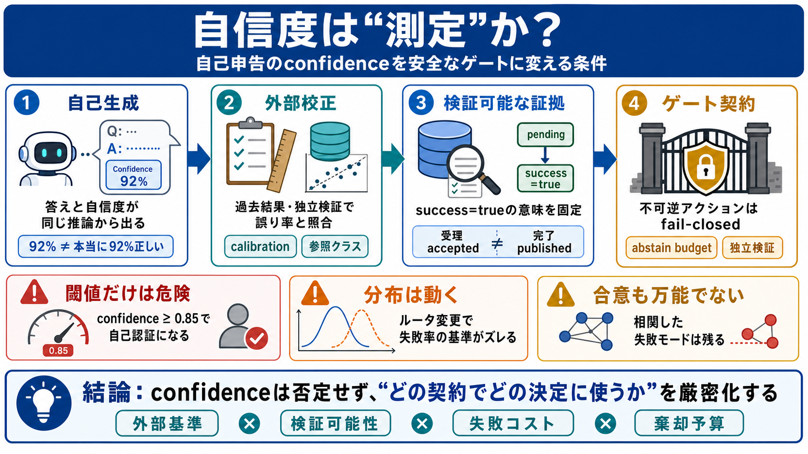

数字は測定になるか
同じパス、同じ飾り
モデルの“決めつけやすさ”と相関。
未来の誤り率と一致を検証。
意味は“外部”で決まる
confidence（自信度）やスコア。
過去結果／ホールドアウト／検証。
将来の誤り頻度との一致度。
閾値は危険を増幅
認可がモデルの自己申告に委ねられる。
外部で検証できるゲート（検証可能な状態）。
ルータで分布が変わる
ルーティングAで校正。
ルーティングBに切替。
失敗頻度の基準がズレる。
“成功=true”が違う
受理（request accepted）だけ。
公開完了（publish finished）だと思う。
ログの整合より検証
検証で間違いを示せる。
独立データで確認。
最新状態と同期。
合意は万能でない
異なる失敗面の非相関。
相関した失敗モード。
棄却予算と fail-closed
外部の正誤データで裏取り。
検証不能なら止める。
失敗を“許す/許さない”を管理。
設計確認の最短手順
受理か完了かを明記し分離。
証拠の鮮度（いつ何を見て確定か）。
否定ではなく契約化
問題は“使用の仕方”。
定義ミスと検証コスト先送り。
不可逆は fail-closed。
最後に残る結論
外部校正（calibration）なし＝確率の意味が崩れる。
ゲートは検証可能性（evidence）と fail-closed を中心に。
No references found